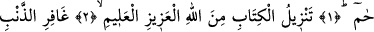
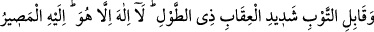
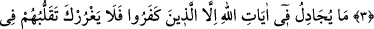
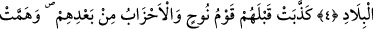
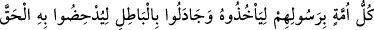
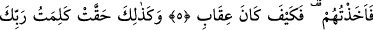
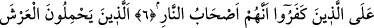
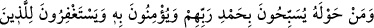
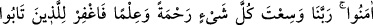
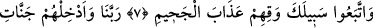
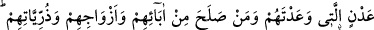
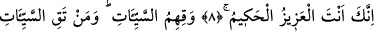
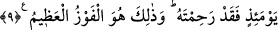
ARŞ’I YÜKLENEN MELEKLER
Bismillâhirrahmânirrahîm
1. Hâ. Mîm.
2. Bu Kitap mutlak galip, hakkıyla bilen, Allah tarafından indirilmiştir.
3. O, günahı bağışlayan, tevbeyi kabul eden, azabı çetin, lütuf sahibidir. O’ndan
başka hiçbir ilâh yoktur, dönüş ancak O’nadır.
4. İnkâr edenler müstesna, hiç kimse Allah’ın âyetleri hakkında tartışmaz.
Onların şehirlerde (rahatlıkla) gezip dolaşması seni aldatmasın.
5. Onlardan önce Nuh kavmi ve bunlardan sonraki topluluklar da
(peygamberlerini) engellemeye, her ümmet kendi peygamberini yakalamaya
azmetmişti. Bâtılı hakkın yerine koymak için mücadele etmişlerdi. Bunun üzerine
ben onları kıskıvrak yakaladım. İşte, cezalandırmamın nasıl olduğunu gör!
6. İnkâr edenlerin cehennem ehli olduklarına dair Rabbinin sözü böylece
gerçekleşti.
7. Arş’ı yüklenen ve bir de onun çevresinde bulunanlar (melekler), Rablerini
hamd ile tesbih ederler, O’na îman ederler. Müminlerin de bağışlanmasını isterler: